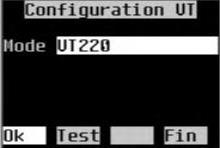
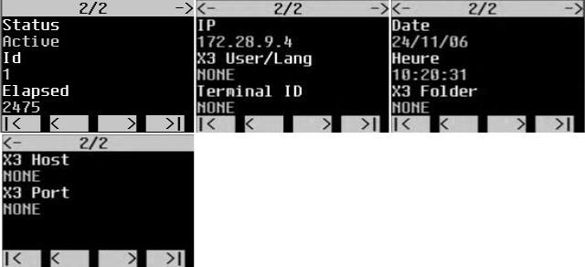
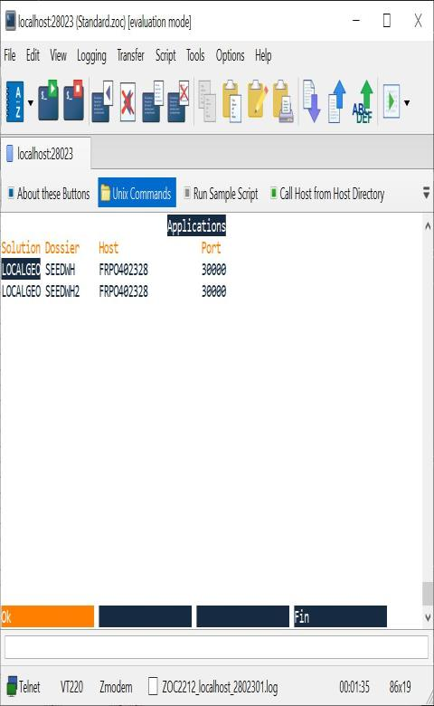

ADC server
Summary:
- Installation and configuration
- Local windows
- Choice of the X3 application
- X3 login screen
- Automatic connection to an X3 application
- Sage X3 Commands
- Personalization
- VT Expert Mode
- Access expert mode
- Homepage
- VT Setup Screen
- Trace configuration screen
- Current session information
- List of user sessions
- X3 format test screens
- Protocols and Emulators
- Configuration files
- Selection of configuration files
- VT_LIST.txt file
- Presentation attributes .cfg files
- .evt files
- Screen ergonomics
- Terminal reconnection
- Identification by IP address
- Identification by X3 user and language code
- Identification by terminal ID
- Reconnection with an active session
- Sessions list management
- Session information
- VT configuration
- How to personnalize VT settings
- How to assign both TAB and ENTER keys to ‘next field’ action
- How to enable ‘content selection’ when the field takes the focus
- VT UTF-8 configuration
- VT protocol and characters encoding
- VT UTF-8 emulators
- ADC SERVER SETTINGS
- VT Settings
- PUTTY UTF-8 VT settings
- All protocols inherit from VT100.cfg configuration
- The .cfg file contains only the differences from the higher levels
The VT sequence is a series of bytes
The server event is identified by a number
Files are structured like .cfg files and each file contains only differences from the top level
- By IP address
- By X3 user code
- By terminal ID
Inactivity delay is less than a predefined time
term.ctermconfig.session.timeout=3600000- ms - ex3subkey.iniTerminal does not respond
In order to check if connection is still open, there is a specific thread on ADC server that sends a VT sequence
periodically to the Terminal. This thread is used also to check session timeoutterm.ctermconfig.session.monitor.sleeptime=2000- ms - ex3subkey.initerm.ctermconfig.session.testdelay=15000- ms - ex3subkey.inimisc.socket.check=.x00- hexadecimal code – VT100.cfg
If reconnection mode is disabled, session (terminal socket and X3 session) will be closed.
Reconnection mode disabled:term.ctermconfig.reconnect.mode=- ex3subkey.ini
reconnection mode enabled:term.ctermconfig.reconnect.mode=IP or X3USER or TERMID
If session drops and reconnection mode is enabled, ADC server will:- Disconnect the session (close the terminal socket not X3 session)
- Store the session in order to be able to retrieve it (pending session)
- Wait for reconnection
ADC server waits for reconnection while waiting time is less than a predefined timeout.
Session is closed if no reconnection occurs before this time. - Duplicate the VT100.cfg/.evt or VT220.cfg/.evt files you want to customize
.cfgand.evtfiles must have the same name.- The name mut have the following structure
PROTOCOL_CUSTOMNAME - These files must contain only the properties you want to modify
By example if you want to personnalize VT100 settings you need to create two empty
VT100_MYCUSTOMER.cfgandVT100_MYCUSTOMER.evtfiles and add the properties you want to change in comparison toVT100.evtandVT100.cfgfiles.Duplicate
VT_LIST.txtfile and rename the copyVT_LIST_CUSTOM.txt- This file contains the list of VT configurations available in the VT configuration screen (expert mode)
- Add your own setting files (FileName without extension=Name)
VT100_MYCUSTOMER1=MYCUSTOMER1VT100_MYCUSTOMER2=MYCUSTOMER2Eventually modify the console parameter
session.videoterminal:- This parameter contains the name of default setting files (without extension) used for the new VT sessions
- Ex :
VT100_MYCUSTOMER2forVT100_MYCUSTOMER2.cgfandVT100_MYCUSTOMER2.evtsettings Emulator "TeraTerm" :
http://sourceforge.jp/projects/ttssh2/Emulator "ZOC" EmTec :
https://www.emtec.com/zoc/index.htmlHyperTerminal Private Edition:
https://www.hilgraeve.com/hyperterminal/
Installation and configuration
Installation
The RF server is a component (web application) of the X3WEB server. It is installed automatically when you install the X3WEB server.Checking the licenses
It is advisable to check that you have a sufficient number of terminal licenses before configuring the RF server.See X3 menu : Development\Utilities\License
Setup
X3WEB server configuration
The X3WEB server can only start after entering the mandatory parameters:Enter the http listening port of the Apache HTTP server for the native web.

The X3WEB server has a web administration console accessible via a browser by the url http://ServerHostName:28880.
The http server port is 28880 by default but it can be changed via the Console.
The restart of the server is automatic after updating the parameters.

RF Server Setup
The RF server opens a TCP listening port N°28023 (by default) used for terminal connections.This port may already be open by another application (telnet server under Unix/Linux).
Example under Linux
The following message is displayed if port 28023 is already used by the system's FTP server.
It is advisable to check the availability of the TCP port used by the RF server (Ex: command `netstat –a` under Windows).
Change the RF server listening port via advanced console settings if it is already in use by another application
The restart of the server is automatic after updating the parameters.
Checking that the server is working properly
Launch an emulator, for example the command telnet under Windows (telnet ServerHostName Port) and check that the window below is displayed. This window is empty because no solutions/folders have been published.You can also check the RF server log via the web Administration Console.

In case of error when starting the RF server (port busy for example) the line circled in red is not displayed. Only the OPEN LOG line is displayed.
Publication of solutions/files
The publication of X3 applications is carried out by the Administration Console.The application selection window presents all published applications, regardless of whether or not they are accessible by a VT terminal.
Configuring the RF Server on Linux
The following message is displayed if you are using listening port #22. You must choose another port number.Other settings
Character screen size The server manages two types of window (in the X3 sense): - The windows local to the RF server - X3 windowsAll character screens are built by the server based on an XML description of the window which contains:
- the size in number of lines and number of characters per column
- the characteristics of screens, blocks and controls
- the list of buttons and associated actions
- local menus
- the list of styles used
X3 Windows The description is generated by the X3 server when validating a screen.
It is made available to the RF server via a 'cache' mechanism identical to that of the native Web server.
The character screen size is a property of the X3 screen. It may vary from one window to another but must be identical for all the screens of the same window.
It is generally identical for all the windows of an X3 application.
For the GEODE application, the size has been fixed at 8 rows and 20 columns.

Particularity of X3 windows for VT applications:
the header screen is present in the X3 descriptions but always empty because it is not taken into account by the RF server.
Local Windows The descriptions of the local windows are stored in the `TOOLS\X3TERM\WINDOWS` sub-directory of the `TOOL` installation folder of the X3WEB server. There is one description file per language (FRA and ENG in the version current).
It is possible to add a new language by copying the ENG folder under the desired language code and modifying the texts (`CAP` attributes) in XML files.
The size of local screens (8x20 by default) is stored in the description (`NLIT="8" NCOT="20"` attributes).
The windows whose descriptions are stored on the RF server are as follows: - The choice of X3 solutions/applications - Login - The X3 _CHOOSE and _SEL windows - Expert mode windows
Choice of language code When opening a new user session, the RF server must have a language code to be able to access the description of the local window to display (choice of applications or login window). The default language code is a Parameter that can be modified via the Administration Console (advanced parameter `session.language`).
From the moment the user has connected to the X3 server, the RF server will use the language code selected by the user to read the descriptions of the local windows (return to login, expert mode, etc.).
If no description is found for the selected language code, the RF server will choose the language code ENG.
Admin Console Settings
These parameters are accessible via the advanced parameters of the administration console of the X3WEB server. All settings are visible under the `term.ctermserversvc` tree.Any modification of the parameters via the console is followed by a complete shutdown/restart of the X3WEB server (native Web, Web services, RF Server, etc.).
Parameter Type Description
General settings
deamon.port Integer TCP listening port for terminals.
23 by default
session.videoterminal String Default protocol for VT sessions.
Name of the default VT configuration file without the extension.
The user can change the session protocol to
adapt it to your terminal via the ‘CTRL P’ command (See
VT_LIST.txt)
VT220 by default – VT100 if empty
Preset values in TOOLS\X3TERM\VT\VT_LIST.txt
VT100
VT100_TUNE
VT100_WINDOWS
VT100_HYPERTERM
VT220=VT220
session.expertpwd String Password to access expert mode.
default adonix
session.language Language Default language code for sessions. The code
user language is updated when
the user clicks on the OK button of the window of
LOGIN.
Blank by default - Updated on install
with the language code entered in the installer
session.testdelay Ms Period of sending in milliseconds of the sequence of
TCP socket validity test. Used for
detect breaks in connection with the terminal.
When a connection break is detected the
session is stopped or put on hold depending on the
reconnect mode.
Sequence sent - VT_100.fcg - misc.socket.check=.x00
Period 5000 milliseconds by default
session.timeout Ms Maximum duration of inactivity authorized for
VT sessions. After this time, the session is
automatically closed by the server.
180000 milliseconds by default
session.monitor.waitimeout Ms Maximum duration of a transient state for a session
(WaitPending, WaitActive, WaitClose). After this time
the session is automatically closed by the server.
10000 milliseconds by default
session.monitor.sleeptime Ms Duration of stopping the session control task.
Defines the period for monitoring the activity of
sessions by the server.
2000 milliseconds by default
session.checktermmode on/off Enables automatic protocol detection of the
terminal by the server (sends a VT sequence of
type ‘report’).
If the terminal returns a response that contains the
protocol used, the server compares this protocol to
that of the session and displays the screen for selecting the
protocol if the client protocol is lower than that
of the session (Ex: VT100 for a session in mode
VT220).
off by default
Only works with VTxxx protocols
Automatic connection to an X3 application
session.solution Blank Solution code.
session.folder Blank File code X3.
session.hostname Blank Login Server Hostname.
session.port Blank Connection server TCP port.
Miscellaneous
misc.stopleftliskey Integer Code of the event that stops the loading
of a left list. The keyboard key associated with this
event is configured in the VT_100.evt file.
11 default for ENTER key - KEY_ENTER
misc.fillingchar Blank Fill character for screens.
Empty for space
Display
session.nbcolumns Integer Number of screen columns for windows not
managed by X3 (local).
20 by default
session.nblines Integer Number of rows of screens for windows not
managed by X3 (local).
8 by default
disp.screen.title on/off Display of screen titles.
off by default
l’écran/précédent.
disp.screen.switch on/off Automatic switch to
On by default
disp.btn.filling Blank Button fill character.
Empty for space
disp.btn.justif Left Justification of button labels.
right Left by default
center
disp.btn.max Integer Number of window buttons allowed.
4 by default
disp.tab.circular on/off Rotating horizontal scrolling for tables.
Off by default
disp.choose.title on/off Displaying the title for the _CHOOSE window.
Off by default
disp.selbox.title on/off Title display for _SEL window.
Off by default
Reconnect
reconnect.mode IP Mode for reconnecting VT sessions.
TERMID Empty by default – Reconnect disabled
X3USER
reconnect.pending.timeout Ms Maximum storage duration of pending sessions
reconnect. After this time the session is
automatically closed by the server.
1800000 milliseconds by default
reconnect.termid.timeout Ms Maximum waiting time for receiving terminal ID at
the opening of the session. Used by mode
reconnect TERMID. After this period, the reception
of a TERMID is not taken into account.
2000 milliseconds by default
Display of tables in form mode
tabform.optimize on/off Optimization of the number of screens by displaying several
columns on the same line
Off by default
tabform.titles on/off Display of column titles
On by default
Local windows
Choice of the X3 application
By default, the first window displayed by the RF server presents the list of 'solutions/folders/Connection servers' which have been published on the X3Web server via the Administration Console.Use the up/down and right/left arrows to navigate the table.
Warning:
The list presents all applications published on this server, regardless of whether or not they are accessible by a VT terminal.

X3 login screen
The login screen allows you to enter the user code/X3 language code.The language code is represented by a local menu (up/down arrow to select the language code).
The list of available language codes as well as the 'Regional settings' associated with the language code are stored in files local to the server `MISC\LANGS.xml` and `MISC\INTLSETTINGS.xml`.
Automatic connection to an X3 application
This connection mode makes it possible to automatically select an X3 application for all users who connect to the server and to directly access the X3 login screen. The console parameters below are used to define the X3 application:term.ctermconfig.session.solution - term.ctermconfig.session.folder term.ctermconfig.session.hostname - term.ctermconfig.session.portFill in these parameters by copying the data displayed in the selection screen the application (in particular the hostname entered must be identical to the one displayed).
If the server does not find the application in the list of applications published on the X3WEB server, it displays the application selection window.
If automatic login is enabled, a MessageBox is displayed when the user closes the login window to quit the application.
The user does not have access to the list of applications, unless the expert mode is activated.

Sage X3 Commands
The RF server knows how to identify and process particular character sequences or Sage X3 sequences used to pass information from the terminal to the server. This sequence can be compared to the parameters of an http URL. An X3 sequence begins with `ESC[adx[` and ends with `]`.The content structure of the sequence is of type 'Query string http'.
Connection settings Sending the following sequence activates the trace, selects an application and displays directly on the logon screen:
ESC[adx[te=VT220&so=DEVSOPHIA&fo=SUPERV&ho=sodaix01&po=1940&us=VT&pwd=&sd=on
&lg=FRA&to=on&th=fdalbo&tp=1515&tl=9]
Beginning of the sequence
ESC[adx[
Terminal protocol
te -> PROTOCOLE_EMULATEUR – Ex VT220 – VT100_TUNE…
Coordonnées de l'application
so -> Solution
fo -> Folder
ho -> Hostname
po -> Port no.
User details
Updated logon screen fields - No automatic logon
us -> User code
pwd -> Password - Disabled
lg -> Language code
Various
Displaying the list of solutions
off indicates the end of the session on FIN logon
sd -> on/off
Trace
Activating the trace
to -> on/off
th -> trace server: hostname
tp -> trace server: port number
tl -> trace server: Level - 0 (off) – 9 (max)
Terminal ID
Used only if TERMID reconnection mode is enabled
id -> Terminal identifier – Unique character string per terminal
End of sequence
]
This sequence can be sent by the terminal either by a MACRO or by configuring the emulator to send a character sequence during connection. Example for the TUNE emulator (Macro)
Hide sleep 0.5 Send "\e[adx[te=VT220&so=GEODEV&fo=GX140&ho=aydaix03.acy.adx&po=6000&us=VT&pwd=&lg=FRA&sd=on&t o=off&th=fdalbo&tp=1515&tl=9]" Display ReturnNote for solutions configured with LoadBalancer/VIP:
Information passed as arguments such as `ho=` and `po=` (Ex: `aydaix03.acy.adx&po=6000`) will be treated differently if a VIP server has been configured.
If the ADC server finds the solution with all the parameters, it will switch directly to the login window.
If it can't find it:
- If the solution is not configured with a VIP server, it will display the folder selection window. - If the solution is configured and linked to a LoadBalancer/VIP, the `ho=runtime&po=port` parameters will be ignored and replaced by the values of the VIP server.
Example:
A `LOCALGEODE` solution is configured with two Runtimes (hostname FRPO402328 and ports 20124 and 20125), on a VIP server `FRPO402328:30000`. The macro requests connection to the runtime `ho=FRPO402328&po=20125`.
Send: \033[adx[so=LOCALGEODE&fo=SEEDWH&ho=FRPO402328&po=20125&id=YT11.&us=.&lg=FRA&sd=on]The values of the `ho=` and `po=` parameters are ignored and replaced by the address of the VIP server.
INFOS: ermX3ApplicationList_1809| getX3App| . Application=[LOCALGEODE] Folder=[SEEDWH] is a VIP Runtime Solution. Server FRPO402328:20125 is ignored and replaced by FRPO402328:30000Operation valid from X3 Console version 2.57 and JavaWeb version 2.42.
Refer to the X3 "Configuration Console" documentation for more information on configuring LoadBalancer/VIPs with VT100 ADC Server.
Personalization
Only in version >= 16w_105.To customize the local windows, all you have to do is copy the xml description file of the window from `WebTools\TOOLS\ADXTERM\WINDOWS` to the `WebData\_CUSTOMERS\ADXTERM\WINDOWS` directory.
The directories must be created if they do not exist.
Modify the contents of the file (size of rows and columns) to modify the window.
WebData is the "data" / "data" installation folder of the X3WEB server.
WebTools is the "tools" / "tools" installation folder of the X3WEB server.
Example for SOLUTIONS.xml 80 columns and 20 rows. ``` CODECODE CODExml

VT Expert Mode
The Expert mode consists of a set of functions accessible via a password.Expert mode screens are managed by the RF server and not by the X3 server.
Access expert mode
Keyboard key `Ctrl+E`
Changing the password via the Console Administration
# Expert mode - password - Def=adonix term.ctermconfig.session.expertpwd=adonix
Homepage

Ver: RF Server Version Dat: Date of the RF server version Win: ID of the current window Scr: current screen ID Fld: ID of the current field (focus) Fmt: X3 format associated with the current field Next: Session Information VT: VT Setup Screen Tra.: Trace configuration screen
VT Setup Screen
The F2 (VT) key is used to modify the default VT configuration (assigned by the server) of the user session.
Mode: Name of the configuration file (see § Protocols and emulators) of the session.
Use the up and down arrows to modify it
Test: Activates/Deactivates the test mode of the VT sequences
Ok: Close the window and confirm the entry
End: Closes the window and keeps the original settings
The TEST (F3) key is used to activate/deactivate the test mode to:
- know the protocol used by the emulator, if the emulator responds to VT commands of the 'Report' type
- display the VT sequences associated with the keyboard keys.
The screen below was obtained by activating the TEST mode and pressing the F1 key. It indicates that the emulator is configured with the VT220 protocol and displays the VT sequence sent to the server by the terminal when the user presses the F1 key.
This screen is very useful for creating new configuration files, suitable for RF terminals.

Trace configuration screen
In the event of an error, the HotLine Sage service may ask the user to activate the server trace in order to obtain more information on this error.Host: Hostname or IP address of the machine on which the trace server is launched Port: Trace server listening TCP port number Lvl. : Trace level (‘Trace off’ to deactivate the trace) Ok: Close the window and confirm the entry End: Closes the window and keeps the original settings See chapter below ‘Activation of the trace’.See chapter below ‘Activation of the trace’.
Current session information
Recx: reconnection mode and identification of the user session
NONE: ReconnectMode disabled
IP: ReconnectMode activated – Identification on IP address
TERMID: ReconnectMode activated – Identification on ID sent by the terminal
X3USER: ReconnectMode activated – Identification on X3 user code and language code
ID: Identifier of the internal session to the server
IP: IP address of the terminal seen by the RF server
USER: X3 User Code / Language Code
TERM: Terminal ID – NONE if no ID was received by the session
List: Displays the list of current sessions
Next: Testing X3 formats
List of user sessions
Displays the list of user sessions. Use the up/down and left/right arrows to move through the list.
Status: Session status
Active: In use
Pending: Waiting for reconnection
ID: Session identifier
* indicates the current session
Elapsed: Time elapsed since the last state change of the session
IP: IP address of the session seen by the RF server
X3 User: User code/Language code X3 – NONE if not connected to X3
Terminal ID: Terminal identifier – NONE if no identifier
Date: Session opening date
Time: Session opening time
X3 Folder: X3 folder – NONE if not connected to X3
X3 Host: Hostname of the X3 connection server – NONE if not connected to X3
X3 Port: TCP port of the X3 connection server – NONE if not connected to X3
Disc: Disconnects the selected session
Status pending if reconnection active otherwise close the session
Used to test reconnect modes
Refr: List Refresh
Kill: Closure of the selected session
In form mode (`CtrlF`):
X3 format test screens

Protocols and Emulators
The basic protocol used by the RF server to communicate with on-board terminals is VT100. As it is a very basic protocol which does not manage all the attributes necessary for a good screen presentation, we have authorized the use of the VT220 protocol which is available on most terminals.The protocol defines:
- the character sequences that the server must send to the terminal to display a screen - the character sequences that the server receives when the user presses a keyboard key
For the same VT protocol version (eg VT220) we have noted differences between emulators, differences which concern both the available attributes and the codes of the character sequences associated with the keyboard keys.
In order to allow the RF server to adapt to any type of terminal, we have implemented (text) files that allow configuration of presentation attributes and character sequences by type of protocol and by emulator.
Configuration files
There are two types of file:- Presentation attributes configuration files `.cfg`
- Configuration files of the character sequences associated with the keyboard keys `.evt`
The file name consists of two parts separated by '_':
- The type of protocol
- The name of the emulator
Only the protocol name is required. File name: PROTOCOL_EMULATOR.
Ex: `VT100, VT100_HYPERTERM, VT220` The files are stored in the `TOOLS\X3TERM\VT` subdirectory of the `TOOL` installation directory of the X3WEB server. Caution:
Applying a patch on the X3WEB server can replace the VT configuration files.
It is recommended:
- to use your own files rather than modifying existing files
- make a backup of VT_LIST.txt files and modified configuration files before applying the patch
- check the content by comparing text files after applying the patch
Selection of configuration files
The RF server is not able to automatically identify the type of terminal when connecting. It is therefore necessary to configure the RF server to define a default Protocol/Emulator configuration. This configuration will be used for all terminals that connect to the server. The user has the possibility to modify this parameter via the expert mode.Default configuration modifiable via the administration console:
#Default VT protocol - VT220 VT100... term.ctermconfig.session.videoterminal=VT220The VT configuration screen in expert mode (Mode pop-up menu) allows you to select a configuration file. The ‘CTRL P’ command allows you to select the protocol without having to go through the expert mode.
The Mode pop-up menu is updated with the contents of the `VT_LIST.txt` file

VT_LIST.txt file
This file contains the list of protocols/emulators supported by the server.This list is displayed in the VT configuration screen (local menu) and is used to select the type of terminal used.
Format: File name (.cfg or .evt)=Caption for display # VTCONFIG WINDOW - VT MODE LOCAL MENU - KEY=LABEL VT100=VT100 VT100_TUNE=VT100_TUNE …The VT_LIST.txt file is replaced during updates of the X3WEB server.
Customization version lower than 16w_105
To customize the list of terminals, it is recommended to create a VT_LIST_CUSTOM.txt file and add the list of terminals to be presented in the selection list. To add a new terminal:
- Create the .cfg and/or .evt files for this terminal
It is recommended, but not mandatory, to choose a name suffixed by `CUSTOM` to ensure that this file will not be replaced by an update procedure (Ex: `VT220_USA_CUSTOM.cfg`).
- Add a new line in `VT_LIST_CUSTOM.txt`
`VT220_USA_CUSTOM=VT220`
Customization version higher than 16w_105 To customize the settings, simply copy the VT_LIST.txt file into the `_CUSTOMERS\ADXTERM\VT` directory from the `Data` installation folder of the X3WEB server and to modify the contents of the file. Create directories if they do not exist.

Presentation attributes .cfg files
This file contains the display settings:1. Hierarchy on two levels Protocol/Emulator 2. The level is given by the name of the file PROTOCOL_EMULATOR
Ex: VT100_WINDOWS.cfg – VT100 for Windows telnet emulator
VT100.cfg
|
-----------------------------
| | |
VT220.cfg VT320.cfg ---------
| | | | |
--------- --------- EMULATEURS
| | | | | |
EMULATEURS EMULATEURS
The description of the configuration parameters is available in the VT100.CFG file in the form of comments.
Example:
Windows emulator uses CharSet Cp858 to convert bytes to unicode characters unlike others
emulators that use the ISO-8859-1 CharSet. In addition, this emulator manages the combination of 'Bold and Reverse video' attributes unlike other VT100 emulators. We have overloaded only the relevant parameters in the VT100_WINDOWS.cfg file.
misc.disp.charset=Cp858 # Bold/Reverse Video allows to manage focus on buttons misc.btn.focus=yes
Modification 14w_036
It is possible to activate the selection mode for the input fields via the following parameters:
# Attribute to display unselected content attr.field.edit.focus=16 # Attribute to display selected content (on focus) attr.field.edit.selected=20 # Activation/Deactivation of selection mode misc.fld.selection=no # no : the content of the control is not selected on taking focus # --> Entering a character does not erase the content # yes : the content of the control is selected on focus # --> Typing a character /backspace/delete the contents of the field # --> Entering left/right/up/down arrows disables selection and allows entry # without deleting the content
This mode is active on the control that has the focus. It allows you to replace the current value of a field during input without having to delete it first.
Customization version lower than 16w_105
Create a VTxxx_CUTSOM.cfg file and modify the contents. This file will be taken into account instead of the VTxxx.cfg file.
Customization version higher than 16w_105
To customize the settings, simply copy the VTxxx.cfg file into the _CUSTOMERS\ADXTERM\VT directory
from the Data installation folder of the X3WEB server and to modify the content of the file. Create directories if they do not exist
not.
.evt files
This file contains the definition of the VT sequences received by the RF server. It defines the link between a sequence of bytes (keyboard key – no mouse) and an internally coded user event as an integer. The RF server only processes the sequences described in these files.
VT100.evt
|
------------------------------
| | |
VT220.evt VT320.evt ---------
| | | | |
--------- --------- EMULATEURS
| | | | | |
EMULATEURS EMULATEURS
Example:
When the user presses the ENTER key, the Windows emulator sends the sequence of bytes Ascii(13)+Ascii(10)
or 0D0A in hex, unlike other emulators which send Ascii(13) or 0D in hex. We have overloaded only the relevant parameter in the VT100_WINDOWS.evt file.
#KEY_ENTER=11 11=.x0D.x0A
Modification 14w_036
It is possible to assign several VT sequences to a server event (action) by using the ',' separator.
For example, if you want to use the TAB and ENTER keys to move to the next field, you just have to create a file setting VT220_USA_CUSTOM.evt and customizing the list of protocols (see § 4.3).
Example configuration for the .evt file
#KEY_TAB_RIGHT=4 – Assign the Tab and ENTER keys to the internal action TAB_RIGHT 4=.x09,.x0D #KEY_ENTER=11 – Assign your F12 key to the internal action ENTER 11=.x1B.x5B.x32.x34.x7E #KEY_RETURN=12 – Annule l’action RETURN 12= #KEY_F12=112 – Cancels the F12 action because the F12 key is used by ENTER 112=
Customization version lower than 16w_105
Create a VTxxx_CUTSOM.evt file and modify the content. This file will be taken into account instead of the VTxxx.evt file.
Customization version higher than 16w_105
To customize the settings, simply copy the VTxxx.evt file into the _CUSTOMERS\ADXTERM\VT directory
from the Data installation folder of the X3WEB server and to modify the content of the file. Create directories if they do not exist
not.
Screen ergonomics
Presentation styles
List of X3 presentation styles supported by the VT server:
Property Value VT Attribute
font-weight bold Bold
normal Normal
bolder Reverse-video
text-decoration underline Underline
blink Turn signal
text-align center Center
left Left alignment
right Right alignment
Exemple :
Reverse-video and centered: - font-weight:bolder;text-align:center Bold, underline, inverse-video and centered - font-weight:bold;text-decoration:underline;font-weight:bolder;text-align:center
Tables in form mode
The CtrlF or Enter keyboard keys are used to display a table or a list on the left (selection window) in form mode. These keys are active on the board that has focus.
This is a simplified form mode compared to the form mode available on X3 web and windows clients.
This display mode presents one row of a table per screen, the columns being displayed vertically.
Movement in the lines is managed by the RF server without dialogue with the X3 server.
The RF server selects the line on the X3 server when the user closes the form mode window using the CtrlF or Enter keys.
-1- Table mode -2- Form mode -3- Next screen -
Icon Keyboard key Description
|< HOME First line display
< Up arrow Display next line
> Down arrow Display previous line
>| END/FIN Last line display
<- Left arrow Display previous screen (previous columns)
-> Right arrow Display next screen (next columns)
2/99 Current line/Number of lines
CtrlF or ENTER Close the window and select the current line
Display space optimization
The tabform.optimize Configuration Console setting helps to optimize space by allowing the column title and value to be displayed on the same line if the size allows. [(Title Size + 1 + Max(value size) ) <= Screen Width].
Default value : off
Example Port and Folder columns below.


The tabform.titles Console parameter allows you to show/hide column titles. Default value: on

-1- Table View

-2- Plug mode
Action of keyboard keys
Context/Focus key Description
ARROW_UP Left list Scroll up one line
Table block Scroll one line up
Table form mode Scroll up one line
MessageBox Scroll text one line up
Pop-up menu field Scroll values one line up
ARROW_DOWN Left list Scroll down one line
Table block Scroll one line down
Form mode Scroll down one line
MessageBox Scroll text one line down
Pop-up menu field Scroll values one line down
ARROW_LEFT Left list Scroll left one column
Table block Scroll one column to the left
Table sheet mode Display of values from previous columns
Group of buttons Go to the previous button
Pop-up menu control Label shift to the left if screen overflow
Go to previous field/screen at the end of scrolling
Editable field Move the cursor one character to the left
Go to previous field/screen at the end of scrolling
ARROW_RIGHT Left list Scroll right one column
Table block Scroll one column to the right
Table form mode Display of the values of the following columns
Group of buttons Go to the next button
Pop-up menu control Label shift to the right if screen overflow
Move to next field at end of scroll
Editable field Move the cursor one character to the right
Move to next field/screen at end of scroll
TAB_LEFT Left list Scroll left one column
Table block Move to previous field
Go to previous screen if first field
Group of buttons Go to the previous button
Move to previous field field
Go to previous screen if first field
Return to initial value if incorrect entry
TAB_RIGHT Left list Scroll right one column
Table block Move to next field
Go to next screen if last field
Group of buttons Go to the next button
Field Move to next field if entered Ok
Go to previous screen if last field
No effect if entered incorrectly
BACKSPACE Left list Scroll left one column
Table block Move to previous field
Go to previous screen if first field
Pop-up menu field Go to previous field/screen
Editable field Delete previous character
Go to previous field/screen on 1 character
PAGE_UP Left list Display previous page
Table block Display previous page
PAGE_DOWN Left list Display next page
Table block Display next page
PAGE_HOME Left list Selection 1st cell – 1st column and 1st row
Table block Selection 1st cell - 1st column and 1st row
Table form mode 1st line selection
Field Positioning on the 1st field of the screen
INSERT Editable field Change of input mode insertion/‘overtype’
DELETE Editable field Delete next character
ENTER button group Sending the action of the button that has
the focus (hilitis)
Parameters VT100.cfg - misc.btn.defkey and misc.btn.focus
Table form mode Selection of the current line and closing of the window
X3 Windows If no button has the focus then sends the action of
screen validation (1028)
Left liste Stop loading the list if loading in progress
Console parameter - term.ctermconfig.misc.stopleftliskey
Sinon envoi de l’action du bouton ‘hilite’
RETURN Same as ENTER button
END Table form mode Last line selection
PAUSE Not managed
F1 Window Sending the action of button N°1 starting from the left
Usually OK button location
F2 Window Sending the action of button N°2 starting from the left
F3 Window Sending the action of button N°3 starting from the left
Reserved for SEL, SelR, and PAGE context buttons
F4 Window Sending the action of button N°4 starting from the left
Usually END button location
F5 Not used
F6 Window selection Pagination - Reading previous data
VT100.cfg parameters - misc.choose.pgup
F7 Window selection Pagination - Read next data
VT100.cfg parameters - misc.choose.pgup
Ctrl+E Window Activation du mode expert
First time password prompt
Parameter VT100.evt KEY_EXPERTMODE
CtrlC Expert mode Closing the current session. Confirmation request
Paramètre VT100.evt KEY_STOPSESSION
CtrlS Window Information des informations de la session
Version/Fenêtre/Ecran/Champ/FormatX3
Paramètre VT100.evt KEY_INFOSESSION
CtrlF Left list Display/Close form mode
Bloc tableau VT100.evt parameters KEY_TABFORMMODE
CtrlP Window Displaying the session protocol selection screen
Idem bouton VT du mode expert
Paramètre VT100.evt KEY_SELECTPROTOCOL
All events associated with keyboard keys can be modified in *.evt files.
Terminal reconnection
General
ADC server (ADC: Automated Data Collection) allows end users to retrieve automatically their session if connection drops.
In order to retrieve user’s session, ADC server needs to identify the terminal.
There is three different ways to identify terminals:
How ADC server deals with user sessions
Once terminal’s connection request has been accepted, ADC server checks periodically if session is still ‘alive’ according
to two criteria:
term.ctermconfig.reconnect.pending.timeout=3600000 - ms - ex3subkey.ini
When ADC server receives a connection request from a terminal and if ADC server identifies a pending session that belongs to this terminal, it connects the pending session to the terminal and sets session alive or active.
Each time ADC server closes a connection, the server sends a message to the terminal that indicates the closing reason.
Identification by IP address
Parameter: term.ctermconfig.reconnect.mode=IP
It’s the simplest way to identify the session.
Session is identified when ADC server receives the connection request and reconnection occurs on line, without waiting for more information.
Identification by X3 user and language code
Parameter: term.ctermconfig.reconnect.mode=X3USER
This mode is enabled only if ADC server is configured to automatically connect user to a predefined X3 application.
That means that LOGON Page is displayed when user connects ADC server instead of applications list.
The following parameters are used to enable automatic connection mode (ex3subkey.ini):
term.ctermconfig.session.solution=GEODEV term.ctermconfig.session.folder=GX160 term.ctermconfig.session.hostname=aydaix03.acy.adx term.ctermconfig.session.port=6000
ADC server opens a new session and wait for X3 user code and password validation.
Before connecting X3 server, ADC server checks if there is a pending sessions with same X3 user code and language code.
If a session is found, ADC server checks password and proceeds or cancels reconnection.
Otherwise ADC server connects current session to X3 server.
The reconnection mode leads administrator to assign a unique X3 user code per end user.
If an end user tries to connect ADC server by using an X3 user code used simultaneously by another end user the connection will be rejected with message "Session is busy" (see § ‘Reconnection with active session’).
Reconnection succeeded
User retrieves his previous X3 screen.
Reconnection failed
Pending session has been found with X3 user code but password is wrong
ADC server found an active session with same ID
See Reconnection with an active session
Identification by terminal ID
Parameter: term.ctermconfig.reconnect.mode=TERMID
If this mode is enabled, ADC server will accept connection request and wait for a specific VT sequence that contains terminal ID.
The way this sequence is sent depends on terminal device.
By example, on Windows emulators you can set the emulator to execute automatically a MACRO that sends the sequence.
Sequence: ESC[adx[id=XXXXX] - ESC=1B hexa
TermId can be also added to the sequence that automatically connect session to a given X3 application:
EXC[adx[te=VT220&so=GEODEV&fo=GX140&ho=aydaix03.acy.adx&po=6000&us=VT&pwd=123&sd=on&lg=FRA&to=off&th=fdalbo&tp=1515& tl=9&id=xxxxx]
Each terminal needs to be configured by the administrator with it own terminal ID.
ADC server waits for terminal ID sequence for a given time. term.ctermconfig.reconnect.termid.timeout=2000 – ms - ex3subkey.ini
If no sequence has been received ADC server keeps the current session.
If terminal ID sequence is received ADC server checks if there is a ‘pending’ session with the same terminal ID.
If a session is found ADC server reconnects this session to the terminal and closes the current session otherwise ADC
server keeps the current session.
If an end user tries to connect ADC server by using a TerminalID used simultaneously by another end user the
connection will be rejected with message “Session is busy” (see § ‘Reconnection with active session’).
ADC server found an active session with same ID
See Reconnection with an active session
Reconnection with an active session
If user closes the terminal without to close the session (END button), the session stays alive until session’s thread monitor detects that the socket has been closed (term.ctermconfig.session.testdelay).
If reconnection occurs before this time, ADC server will find a session that match the ID (terminal ID or X3 user) but this session could be still ‘alive’.
In this particular case ADC server will check if socket is open by sending the VT sequence (misc.socket.check).
If socket is closed then reconnection proceeds otherwise ADC server will send a message that ask user to retry.
Normally user will have to wait for term.ctermconfig.session.testdelay before retrying (15 seconds by default).

Sessions list management
Sessions management screens are available on expert mode.
To enabled expert mode type Ctrl + E and input password
Password : term.ctermconfig.session.expertpwd=adonix
‘Next’ button displays session information screen
‘Next’ button displays sessions list screen
Use Left/Right and Up/Down arrows to scroll the list
ID is the internal session ID. ‘*’ character indicates that the session is the current session.
‘Disc’ button:
Disconnect the selected session (close the socket and sets session pending) and allows reconnection
‘Refr’ button:
Refresh the session’s list.
ADC server refreshes automatically the list when a session is added/removed or when session status changed.
‘Kill’ button:
Close the selected session (socket and X3 session) without reconnection
Session information
To enabled the display of session information type Ctrl+S.
Screens are the same as expert mode but action buttons are disabled.
VT configuration
How to personnalize VT settings
How to assign both TAB and ENTER keys to ‘next field’ action
.evt files contain the relations between VT sequences and internal server actions.
X3WEB 14W_036 version has been enhanced in order to allow administrator to assign multiple VT sequences to an
internal action by using ‘,’ separator.
To customize VT sequences you just have to create you own .evt file and to add the actions you want to modify.
Sample.evt file :
# KEY_TAB_RIGHT=4 # Assign TAB (09 Hexa) and ENTER (0D hexa) to next field action (internal id=4) 4=.x09,.x0D # KEY_ENTER=11 # Assign F12 key to standard internal action ENTER (or validation) # To disable an action you just have to assign no VT sequence. 11=.x1B.x5B.x32.x34.x7E # KEY_RETURN=12 # Disable standard RETURN internal action(same as ENTER) 12= # KEY_F12=112 # Disable F12 action because F12 key is already assigned to ENTER action 112=
How to enable ‘content selection’ when the field takes the focus
This mode allows the user to replace the value of the field when he/she strikes the first character.
It works like an X3 input field. When the field takes the focus the content is selected (highlighted) that indicates that if the
user strikes a character (or backspace or delete keys) the content will be cleared.
To disable the selection and enable standard overstrike mode, the user will just have to press left/right/up/down arrows.
To enable/disable this behavior you just have to create you own .cfg file and to add the following properties.
There are 3 parameters in .cfg files which are used to configure this behavior:
# Yes to enable ‘content selection’ mode misc.fld.selection=yes # Attribute used to display non selected content (ReverseVideo in this case) attr.field.edit.focus=16 to # Attribute used to display selected content (ReverseVideo+bold in this case) attr.field.edit.selected=20
If the VT protocol you use do not allow ReverseVideo+bold attribute you can use no attribute (0) for
attr.field.edit.focus and ReverseVideo (16) for attr.field.edit.selected.
Like the VT fields are filled with ‘.’ character, the user will be able to see the field on the screen without having to use an attribute.
General 2 How ADC server deals with user sessions 2 Identification by IP address 2 Identification by X3 user and language code 3 Reconnection succeeded 3 Reconnection failed 3 Identification by terminal ID 4 Reconnection with an active session 5 Sessions list management 5 Session information 7 VT configuration 7 How to personnalize VT settings 7 How to assign both TAB and ENTER keys to ‘next field’ action 7 How to enable ‘content selection’ when the field takes the focus 8
VT UTF-8 configuration
VT protocol and characters encoding
Originally VT protocol (VT100) has been designed to emulate 7 bits ASCII (American) character set.
This character set has 2 type of characters, Control Characters and Graphic Characters.
Graphic charaters are the characters you can display on the screen.
Control characters make the VT perform a range of special actions(moving cursor…)
Control characters (C0) ASCII codes are included between x00 and x1F (32 characters).
Graphical ASCII codes are included between x1F and x7F (96 characters)..
For 8 bits systems there is a supplemental control character set (C1) from x80 to x9F (32 characters) and a supplemental graphic character set from xA0 to xFF (96 characters).
In addition to control character set VT protocol uses control functions (escape sequences…) to perfomr more complex functions. These sequences begin with a control character (ESC or x1B) followed by graphicla characters.
The maximum number of characters available to display a VT screen is 192 for 8 bits and 96 for 7 bits systems. This is sufficient to display languages based on an alphabet but not enough to display CJKV (Chinses, Korean, Japanese, Vietnamien) languages.
Unicode systems have been designed to allow text and symbols from all of the writing systems of the world to be consistently represented and manipulated by computers.
Old VT emulators do not support unicode characters but new genration has been enhanced to deal with unicode charaters in order to allow display CJKV characters.
ADC server has been enhanced to be compilant with unicode characters and specifically with UTF-8 encoded characters. The advantage of UTF-8 encoding is that it is consistent with 7 bits ASCII encoding.
VT UTF-8 emulators
VT UTF-8 protocol has been validated by using PUTTY free emulator which seems to be the most popular.

Microsoft Windows also enhanced HyperTerminal emulator in order to deal with UTF-8 characters but we were not able to configurate it.
TechNotes :
- https://learn.microsoft.com/en-us/previous-versions/aa506025(v=msdn.10)
ADC SERVER SETTINGS
ADC server has been design to deal with VT100 and VT220 protocols and to allows the administrator to personnalize VT settings like display attributes or VT sequences.
VT Settings
VT settings files are stored into "TOOL" install folder, under TOOL/ADXTERM/VT folder.
- .evt files contain the relations between VT sequences and internal server actions.
- .cfg files contain diplay attributes and option
- VT_LIST.txt contains the list of available settings
The list is displayed in VT MODE listbox in ‘VT Settings’ screen (expert mode)

PUTTY UTF-8 VT settings
VT100_PUTTY .evt and .cfg files are the settings you have to use to enable UTF-8 caharcters emulation.
VT100_PUTTY.evt
This file defines the non standard VT sequences sent by PUTTY to ADC server.
#----------------KEYPAD KEYS----------------- #KEY_DELETE=10 10=.x1B.x5B.x33.x7E #KEY_BACKSPACE=15 15=.x7F #----------------FUNCTION KEYS----------------- #KEY_F1=101 101=.x1B.x5B.x31.x31.x7E #KEY_F2=102 102=.x1B.x5B.x31.x32.x7E #KEY_F3=103 103=.x1B.x5B.x31.x33.x7E #KEY_F4=104 104=.x1B.x5B.x31.x34.x7E
VT100_PUTTY.cfg
This file defines the display attributes specific to PUTTY emulator and particularly the character encoding (character set) used to convert unicode Java characters to UTF-8 characters before sending the screen to PUTTY.
# Fiche 40194 - New settings UTF68 attr.btn.std=16 attr.btn.highlight=20 attr.grid.title=4 attr.grid.numline=4 attr.misc.wait=20 attr.field.diszo.focus=4 attr.field.edit.selected=20 misc.fld.selection=yes misc.btn.focus=yes #UTF-8 misc.disp.charset=UTF-8
Other emulators
If you are using an emulator which is not compliant with PUTTY settings please contact @sage.com
PUTTY CLIENT SETTINGS
How to install putty emulator:
Download putty zip file